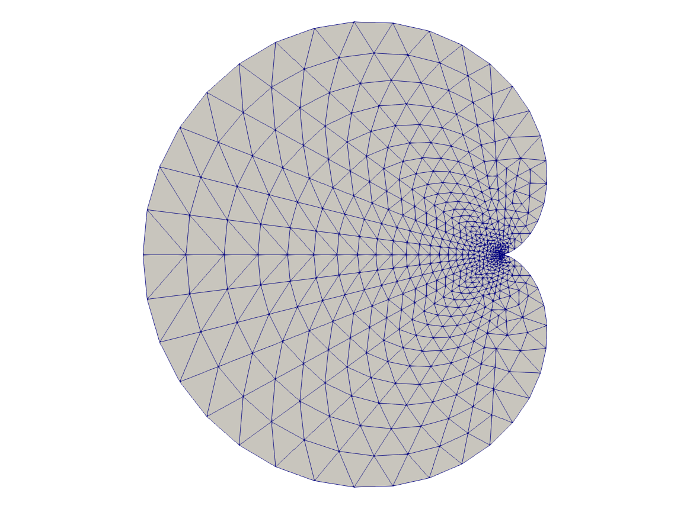
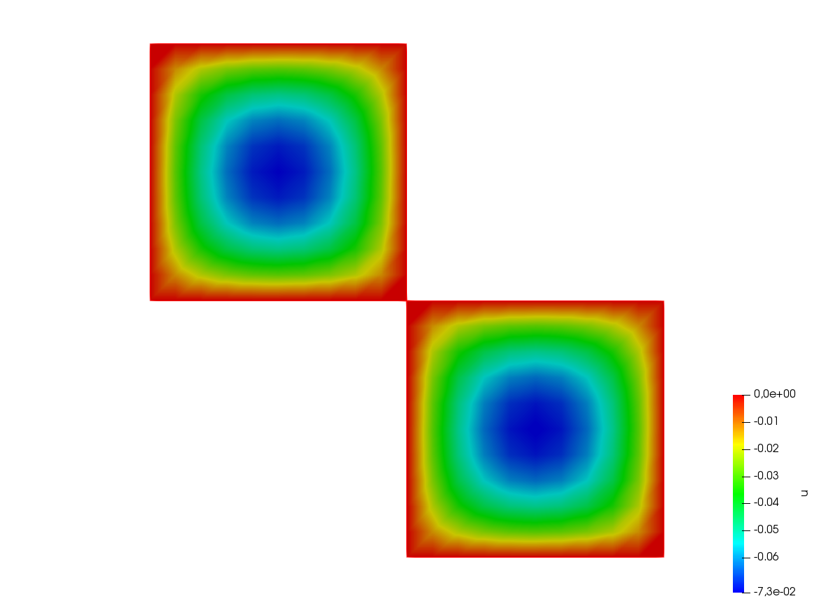

Developers
FFT
1 2 3 4 5 6 7 8 9 10 11 12 13 14 15 16 17 18 19 20 21 22 23 24 25 26 27 28 29 30 31 32 33 34 35 36 37 38 39 40 41 42 43 44 45 46 47 48 49 50 51 52 53 54 55 56 57 58 59 60 61 62 63 64 65 66 67 68 69 70 71 72 73 74 75 76 77 | load "dfft"
// Parameters
int nx = 32;
real ny = 16;
real N = nx*ny;
func f1 = cos(2*x*2*pi)*cos(3*y*2*pi);
// Mesh
//warning: the fourier space is not exactly the unit square due to periodic condition
mesh Th = square(nx-1, ny-1, [(nx-1)*x/nx, (ny-1)*y/ny]);
//warning: the numbering of the vertices (x,y) is
//given by i = x/nx + nx*y/ny
// Fespace
fespace Vh(Th,P1);
Vh<complex> u = f1, v;
Vh w = f1;
Vh ur, ui;
// FFT
//in dfft the matrix n, m is in row-major order and array n, m is
//store j + m*i (the transpose of the square numbering)
v[] = dfft(u[], ny, -1);
u[] = dfft(v[], ny, +1);
cout << "||u||_\infty " << u[].linfty << endl;
u[] *= 1./N;
cout << "||u||_\infty " << u[].linfty << endl;
ur = real(u);
// Plot
plot(w, wait=1, value=1, cmm="w");
plot(ur, wait=1, value=1, cmm="u");
v = w - u;
cout << "diff = " << v[].max << " " << v[].min << endl;
assert( norm(v[].max) < 1e-10 && norm(v[].min) < 1e-10);
// Other example
//FFT Lapacian
//-\Delta u = f with biperiodic condition
func f = cos(3*2*pi*x)*cos(2*2*pi*y);
func ue = (1./(square(2*pi)*13.))*cos(3*2*pi*x)*cos(2*2*pi*y); //the exact solution
Vh<complex> ff = f;
Vh<complex> fhat;
Vh<complex> wij;
// FFT
fhat[] = dfft(ff[],ny,-1);
//warning in fact we take mode between -nx/2, nx/2 and -ny/2, ny/2
//thanks to the operator ?:
wij = square(2.*pi)*(square(( x<0.5?x*nx:(x-1)*nx)) + square((y<0.5?y*ny:(y-1)*ny)));
wij[][0] = 1e-5; //to remove div / 0
fhat[] = fhat[] ./ wij[];
u[] = dfft(fhat[], ny, 1);
u[] /= complex(N);
ur = real(u); //the solution
w = real(ue); //the exact solution
// Plot
plot(w, ur, value=1, cmm="ue", wait=1);
// Error
w[] -= ur[];
real err = abs(w[].max) + abs(w[].min);
cout << "err = " << err << endl;
assert(err < 1e-6);
fftwplan p1 = plandfft(u[], v[], ny, -1);
fftwplan p2 = plandfft(u[], v[], ny, 1);
real ccc = square(2.*pi);
cout << "ny = " << ny << endl;
map(wij[], ny, ccc*(x*x+y*y));
wij[][0] = 1e-5;
plot(wij, cmm="wij");
|
Complex
1 2 3 4 5 6 7 8 9 10 11 12 13 14 15 16 17 18 19 20 21 22 23 24 25 26 | real a = 2.45, b = 5.33;
complex z1 = a + b*1i, z2 = a + sqrt(2.)*1i;
func string pc(complex z){
string r = "(" + real(z);
if (imag(z) >= 0) r = r + "+";
return r + imag(z) + "i)";
}
func string toPolar(complex z){
return "";//abs(z) + "*(cos(" + arg(z) + ")+i*sin(" + arg(z) + "))";
}
cout << "Standard output of the complex " << pc(z1) << " is the pair: " << z1 << endl;
cout << pc(z1) << " + " << pc(z2) << " = " << pc(z1+z2) << endl;
cout << pc(z1) << " - " << pc(z2) << " = " << pc(z1-z2) << endl;
cout << pc(z1) << " * " << pc(z2) << " = " << pc(z1*z2) << endl;
cout << pc(z1) << " / " << pc(z2) << " = " << pc(z1/z2) << endl;
cout << "Real part of " << pc(z1) << " = " << real(z1) << endl;
cout << "Imaginary part of " << pc(z1) << " = " << imag(z1) << endl;
cout << "abs(" << pc(z1) << ") = " << abs(z1) << endl;
cout << "Polar coordinates of " << pc(z2) << " = " << toPolar(z2) << endl;
cout << "de Moivre formula: " << pc(z2) << "^3 = " << toPolar(z2^3) << endl;
cout << " and polar(" << abs(z2) << ", " << arg(z2) << ") = " << pc(polar(abs(z2), arg(z2))) << endl;
cout << "Conjugate of " <<pc(z2) << " = " << pc(conj(z2)) <<endl;
cout << pc(z1) << " ^ " << pc(z2) << " = " << pc(z1^z2) << endl;
|
Output of this script is:
1 2 3 4 5 6 7 8 9 10 11 12 13 | Standard output of the complex (2.45+5.33i) is the pair: (2.45,5.33)
(2.45+5.33i) + (2.45+1.41421i) = (4.9+6.74421i)
(2.45+5.33i) - (2.45+1.41421i) = (0+3.91579i)
(2.45+5.33i) * (2.45+1.41421i) = (-1.53526+16.5233i)
(2.45+5.33i) / (2.45+1.41421i) = (1.692+1.19883i)
Real part of (2.45+5.33i) = 2.45
Imaginary part of (2.45+5.33i) = 5.33
abs((2.45+5.33i)) = 5.86612
Polar coordinates of (2.45+1.41421i) =
de Moivre formula: (2.45+1.41421i)^3 =
and polar(2.82887, 0.523509) = (2.45+1.41421i)
Conjugate of (2.45+1.41421i) = (2.45-1.41421i)
(2.45+5.33i) ^ (2.45+1.41421i) = (8.37072-12.7078i)
|
String
1 2 3 4 5 6 7 8 9 10 11 12 13 14 15 16 17 18 19 20 | // Concatenation
string tt = "toto1" + 1 + " -- 77";
// Append
string t1 = "0123456789";
t1(4:3) = "abcdefghijk-";
// Sub string
string t55 = t1(4:14);
cout << "tt = " << tt << endl;
cout << "t1 = " << t1 << endl;
cout << "t1.find(abc) = " << t1.find("abc") << endl;
cout << "t1.rfind(abc) = " << t1.rfind("abc") << endl;
cout << "t1.find(abc, 10) = " << t1.find("abc",10) << endl;
cout << "t1.ffind(abc, 10) = " << t1.rfind("abc",10) << endl;
cout << "t1.length = " << t1.length << endl;
cout << "t55 = " << t55 << endl;
|
The output of this script is:
1 2 3 4 5 6 7 8 | tt = toto11 -- 77
t1 = 0123abcdefghijk-456789
t1.find(abc) = 4
t1.rfind(abc) = 4
t1.find(abc, 10) = -1
t1.ffind(abc, 10) = 4
t1.length = 22
t55 = abcdefghijk
|
Elementary function
1 2 3 4 5 6 7 8 9 10 11 12 | real b = 1.;
real a = b;
func real phix(real t){
return (a+b)*cos(t) - b*cos(t*(a+b)/b);
}
func real phiy(real t){
return (a+b)*sin(t) - b*sin(t*(a+b)/b);
}
border C(t=0, 2*pi){x=phix(t); y=phiy(t);}
mesh Th = buildmesh(C(50));
plot(Th);
|

{kind=link}
Fig. 221 Mesh
Array
1 2 3 4 5 6 7 8 9 10 11 12 13 14 15 16 17 18 19 20 21 22 23 24 25 26 27 28 29 30 31 32 33 34 35 36 37 38 39 40 41 42 43 44 45 46 47 48 49 50 51 52 53 54 55 56 57 58 59 60 61 62 63 64 65 66 67 68 69 70 71 72 73 74 75 76 77 78 79 80 81 82 83 84 85 86 87 88 89 90 91 92 93 94 95 96 97 98 99 100 101 102 103 104 105 106 107 108 109 110 111 112 113 114 115 116 117 118 119 120 121 122 123 124 125 126 127 128 129 130 131 132 133 134 135 136 137 138 139 140 141 142 143 144 145 146 147 148 149 150 151 152 153 154 155 156 157 158 159 160 161 162 163 164 165 166 167 168 169 170 171 172 173 174 175 176 177 178 179 180 181 182 183 184 185 186 187 188 189 190 191 192 193 194 195 196 197 198 199 200 201 202 | real[int] tab(10), tab1(10); //2 array of 10 real
//real[int] tab2; //bug: array with no size
tab = 1.03; //set all the array to 1.03
tab[1] = 2.15;
cout << "tab: " << tab << endl;
cout << "min: " << tab.min << endl;
cout << "max: " << tab.max << endl;
cout << "sum: " << tab.sum << endl;
tab.resize(12); //change the size of array tab to 12 with preserving first value
tab(10:11) = 3.14; //set values 10 & 11
cout << "resized tab: " << tab << endl;
tab.sort ; //sort the array tab
cout << "sorted tab:" << tab << endl;
real[string] tt; //array with string index
tt["+"] = 1.5;
cout << "tt[\"a\"] = " << tt["a"] << endl;
cout << "tt[\"+\"] = " << tt["+"] << endl;
real[int] a(5), b(5), c(5), d(5);
a = 1;
b = 2;
c = 3;
a[2] = 0;
d = ( a ? b : c ); //for i = 0, n-1 : d[i] = a[i] ? b[i] : c[i]
cout << " d = ( a ? b : c ) is " << d << endl;
d = ( a ? 1 : c ); //for i = 0, n-1: d[i] = a[i] ? 1 : c[i]
d = ( a ? b : 0 ); //for i = 0, n-1: d[i] = a[i] ? b[i] : 0
d = ( a ? 1 : 0 ); //for i = 0, n-1: d[i] = a[i] ? 0 : 1
int[int] ii(0:d.n-1); //set array ii to 0, 1, ..., d.n-1
d = -1:-5; //set d to -1, -2, ..., -5
sort(d, ii); //sort array d and ii in parallel
cout << "d: " << d << endl;
cout << "ii: " << ii << endl;
{
int[int] A1(2:10); //2, 3, 4, 5, 6, 7, 8, 9, 10
int[int] A2(2:3:10); //2, 5, 8
cout << "A1(2:10): " << A1 << endl;
cout << "A2(2:3:10): " << A1 << endl;
A1 = 1:2:5;
cout << "1:2:5 => " << A1 << endl;
}
{
real[int] A1(2:10); //2, 3, 4, 5, 6, 7, 8, 9, 10
real[int] A2(2:3:10); //2, 5, 8
cout << "A1(2:10): " << A1 << endl;
cout << "A2(2:3:10): " << A1 << endl;
A1 = 1.:0.5:3.999;
cout << "1.:0.5:3.999 => " << A1 << endl;
}
{
complex[int] A1(2.+0i:10.+0i); //2, 3, 4, 5, 6, 7, 8, 9, 10
complex[int] A2(2.:3.:10.); //2, 5, 8
cout << " A1(2.+0i:10.+0i): " << A1 << endl;
cout << " A2(2.:3.:10.)= " << A2 << endl;
cout << " A1.re real part array: " << A1.re << endl ;
// he real part array of the complex array
cout << " A1.im imag part array: " << A1.im << endl ;
//the imaginary part array of the complex array
}
// Integer array operators
{
int N = 5;
real[int] a(N), b(N), c(N);
a = 1;
a(0:4:2) = 2;
a(3:4) = 4;
cout << "a: " << a << endl;
b = a + a;
cout <<"b = a + a: " << b << endl;
b += a;
cout <<"b += a: " << b << endl;
b += 2*a;
cout <<"b += 2*a: " << b << endl;
b /= 2;
cout <<" b /= 2: " << b << endl;
b .*= a; // same as b = b .* a
cout << "b .*= a: " << b << endl;
b ./= a; //same as b = b ./ a
cout << "b ./= a: " << b << endl;
c = a + b;
cout << "c = a + b: " << c << endl;
c = 2*a + 4*b;
cout << "c = 2*a + 4b: " << c << endl;
c = a + 4*b;
cout << "c = a + 4b: " << c << endl;
c = -a + 4*b;
cout << "c = -a + 4b: " << c << endl;
c = -a - 4*b;
cout << "c = -a - 4b: " << c << endl;
c = -a - b;
cout << "c = -a -b: " << c << endl;
c = a .* b;
cout << "c = a .* b: " << c << endl;
c = a ./ b;
cout << "c = a ./ b: " << c << endl;
c = 2 * b;
cout << "c = 2 * b: " << c << endl;
c = b * 2;
cout << "c = b * 2: " << c << endl;
//this operator do not exist
//c = b/2;
//cout << "c = b / 2: " << c << endl;
//Array methods
cout << "||a||_1 = " << a.l1 << endl;
cout << "||a||_2 = " << a.l2 << endl;
cout << "||a||_infty = " << a.linfty << endl;
cout << "sum a_i = " << a.sum << endl;
cout << "max a_i = " << a.max << " a[ " << a.imax << " ] = " << a[a.imax] << endl;
cout << "min a_i = " << a.min << " a[ " << a.imin << " ] = " << a[a.imin] << endl;
cout << "a' * a = " << (a'*a) << endl;
cout << "a quantile 0.2 = " << a.quantile(0.2) << endl;
//Array mapping
int[int] I = [2, 3, 4, -1, 3];
b = c = -3;
b = a(I); //for (i = 0; i < b.n; i++) if (I[i] >= 0) b[i] = a[I[i]];
c(I) = a; //for (i = 0; i < I.n; i++) if (I[i] >= 0) C(I[i]) = a[i];
cout << "b = a(I) : " << b << endl;
cout << "c(I) = a " << c << endl;
c(I) += a; //for (i = 0; i < I.n; i++) if (I[i] >= 0) C(I[i]) += a[i];
cout << "b = a(I) : " << b << endl;
cout << "c(I) = a " << c << endl;
}
{
// Array versus matrix
int N = 3, M = 4;
real[int, int] A(N, M);
real[int] b(N), c(M);
b = [1, 2, 3];
c = [4, 5, 6, 7];
complex[int, int] C(N, M);
complex[int] cb = [1, 2, 3], cc = [10i, 20i, 30i, 40i];
b = [1, 2, 3];
int [int] I = [2, 0, 1];
int [int] J = [2, 0, 1, 3];
A = 1; //set all the matrix
A(2, :) = 4; //the full line 2
A(:, 1) = 5; //the full column 1
A(0:N-1, 2) = 2; //set the column 2
A(1, 0:2) = 3; //set the line 1 from 0 to 2
cout << "A = " << A << endl;
//outer product
C = cb * cc';
C += 3 * cb * cc';
C -= 5i * cb * cc';
cout << "C = " << C << endl;
//this transforms an array into a sparse matrix
matrix B;
B = A;
B = A(I, J); //B(i, j) = A(I(i), J(j))
B = A(I^-1, J^-1); //B(I(i), J(j)) = A(i,j)
//outer product
A = 2. * b * c';
cout << "A = " << A << endl;
B = b*c'; //outer product B(i, j) = b(i)*c(j)
B = b*c'; //outer product B(i, j) = b(i)*c(j)
B = (2*b*c')(I, J); //outer product B(i, j) = b(I(i))*c(J(j))
B = (3.*b*c')(I^-1,J^-1); //outer product B(I(i), J(j)) = b(i)*c(j)
cout << "B = (3.*b*c')(I^-1,J^-1) = " << B << endl;
//row and column of the maximal coefficient of A
int i, j, ii, jj;
ijmax(A, ii, jj);
i = A.imax;
j = A.jmax;
cout << "Max " << i << " " << j << ", = " << A.max << endl;
//row and column of the minimal coefficient of A
ijmin(A, i, j);
ii = A.imin;
jj = A.jmin;
cout << "Min " << ii << " " << jj << ", = " << A.min << endl;
}
|
The output os this script is:
1 2 3 4 5 6 7 8 9 10 11 12 13 14 15 16 17 18 19 20 21 22 23 24 25 26 27 28 29 30 31 32 33 34 35 36 37 38 39 40 41 42 43 44 45 46 47 48 49 50 51 52 53 54 55 56 57 58 59 60 61 62 63 64 65 66 67 68 69 70 71 72 73 74 75 76 77 78 79 80 81 82 83 84 85 86 87 88 89 90 91 92 93 94 95 96 97 98 99 100 101 102 103 104 105 106 107 108 109 110 111 112 113 114 115 116 117 118 119 120 121 122 123 124 125 126 127 128 129 130 131 132 133 134 135 136 137 138 139 140 141 142 143 144 145 146 147 148 149 150 151 152 153 154 155 156 | tab: 10
1.03 2.15 1.03 1.03 1.03
1.03 1.03 1.03 1.03 1.03
min: 1.03
max: 2.15
sum: 11.42
resized tab: 12
1.03 2.15 1.03 1.03 1.03
1.03 1.03 1.03 1.03 1.03
3.14 3.14
sorted tab:12
1.03 1.03 1.03 1.03 1.03
1.03 1.03 1.03 1.03 2.15
3.14 3.14
tt["a"] = 0
tt["+"] = 1.5
d = ( a ? b : c ) is 5
2 2 3 2 2
d: 5
-5 -4 -3 -2 -1
ii: 5
4 3 2 1 0
A1(2:10): 9
2 3 4 5 6
7 8 9 10
A2(2:3:10): 9
2 3 4 5 6
7 8 9 10
1:2:5 => 3
1 3 5
A1(2:10): 9
2 3 4 5 6
7 8 9 10
A2(2:3:10): 9
2 3 4 5 6
7 8 9 10
1.:0.5:3.999 => 6
1 1.5 2 2.5 3
3.5
A1(2.+0i:10.+0i): 9
(2,0) (3,0) (4,0) (5,0) (6,0)
(7,0) (8,0) (9,0) (10,0)
A2(2.:3.:10.)= 3
(2,0) (5,0) (8,0)
A1.re real part array: 9
2 3 4 5 6
7 8 9 10
A1.im imag part array: 9
0 0 0 0 0
0 0 0 0
a: 5
2 1 2 4 4
b = a + a: 5
4 2 4 8 8
b += a: 5
6 3 6 12 12
b += 2*a: 5
10 5 10 20 20
b /= 2: 5
5 2.5 5 10 10
b .*= a: 5
10 2.5 10 40 40
b ./= a: 5
5 2.5 5 10 10
c = a + b: 5
7 3.5 7 14 14
c = 2*a + 4b: 5
24 12 24 48 48
c = a + 4b: 5
22 11 22 44 44
c = -a + 4b: 5
18 9 18 36 36
c = -a - 4b: 5
-22 -11 -22 -44 -44
c = -a -b: 5
-7 -3.5 -7 -14 -14
c = a .* b: 5
10 2.5 10 40 40
c = a ./ b: 5
0.4 0.4 0.4 0.4 0.4
c = 2 * b: 5
10 5 10 20 20
c = b * 2: 5
10 5 10 20 20
||a||_1 = 13
||a||_2 = 6.40312
||a||_infty = 4
sum a_i = 13
max a_i = 4 a[ 3 ] = 4
min a_i = 1 a[ 1 ] = 1
a' * a = 41
a quantile 0.2 = 2
b = a(I) : 5
2 4 4 -3 4
c(I) = a 5
-3 -3 2 4 2
b = a(I) : 5
2 4 4 -3 4
c(I) = a 5
-3 -3 4 9 4
A = 3 4
1 5 2 1
3 3 3 1
4 5 2 4
C = 3 4
(-50,-40) (-100,-80) (-150,-120) (-200,-160)
(-100,-80) (-200,-160) (-300,-240) (-400,-320)
(-150,-120) (-300,-240) (-450,-360) (-600,-480)
A = 3 4
8 10 12 14
16 20 24 28
24 30 36 42
B = (3.*b*c')(I^-1,J^-1) = # Sparse Matrix (Morse)
# first line: n m (is symmetic) nbcoef
# after for each nonzero coefficient: i j a_ij where (i,j) \in {1,...,n}x{1,...,m}
3 4 0 12
1 1 10
1 2 12
1 3 8
1 4 14
2 1 15
2 2 18
2 3 12
2 4 21
3 1 5
3 2 6
3 3 4
3 4 7
|
Block matrix
1 2 3 4 5 6 7 8 9 10 11 12 13 14 15 16 17 18 19 20 21 22 23 24 25 26 27 28 29 30 31 32 33 34 35 36 37 38 39 40 41 42 43 44 45 46 47 48 49 50 51 52 53 54 55 56 57 58 59 60 | // Parameters
real f1 = 1.;
real f2 = 1.5;
// Mesh
mesh Th1 = square(10, 10);
mesh Th2 = square(10, 10, [1+x, -1+y]);
plot(Th1, Th2);
// Fespace
fespace Uh1(Th1, P1);
Uh1 u1;
fespace Uh2(Th2, P2);
Uh2 u2;
// Macro
macro grad(u) [dx(u), dy(u)] //
// Problem
varf vPoisson1 (u, v)
= int2d(Th1)(
grad(u)' * grad(v)
)
- int2d(Th1)(
f1 * v
)
+ on(1, 2, 3, 4, u=0)
;
varf vPoisson2 (u, v)
= int2d(Th2)(
grad(u)' * grad(v)
)
- int2d(Th2)(
f1 * v
)
+ on(1, 2, 3, 4, u=0)
;
matrix<real> Poisson1 = vPoisson1(Uh1, Uh1);
real[int] Poisson1b = vPoisson1(0, Uh1);
matrix<real> Poisson2 = vPoisson2(Uh2, Uh2);
real[int] Poisson2b = vPoisson2(0, Uh2);
//block matrix
matrix<real> G = [[Poisson1, 0], [0, Poisson2]];
set(G, solver=sparsesolver);
//block right hand side
real[int] Gb = [Poisson1b, Poisson2b];
// Solve
real[int] sol = G^-1 * Gb;
// Dispatch
[u1[], u2[]] = sol;
// Plot
plot(u1, u2);
|

{kind=link}
Fig. 222 Result
Matrix operations
1 2 3 4 5 6 7 8 9 10 11 12 13 14 15 16 17 18 19 20 21 22 23 24 25 26 27 28 29 30 31 32 33 34 35 36 37 38 39 40 41 42 43 44 45 46 47 48 49 50 51 52 53 54 55 56 57 58 59 60 61 62 63 64 65 66 67 68 69 70 71 72 73 | // Mesh
mesh Th = square(2, 1);
// Fespace
fespace Vh(Th, P1);
Vh f, g;
f = x*y;
g = sin(pi*x);
Vh<complex> ff, gg; //a complex valued finite element function
ff= x*(y+1i);
gg = exp(pi*x*1i);
// Problem
varf mat (u, v)
= int2d(Th)(
1*dx(u)*dx(v)
+ 2*dx(u)*dy(v)
+ 3*dy(u)*dx(v)
+ 4*dy(u)*dy(v)
)
+ on(1, 2, 3, 4, u=1)
;
varf mati (u, v)
= int2d(Th)(
1*dx(u)*dx(v)
+ 2i*dx(u)*dy(v)
+ 3*dy(u)*dx(v)
+ 4*dy(u)*dy(v)
)
+ on(1, 2, 3, 4, u=1)
;
matrix A = mat(Vh, Vh);
matrix<complex> AA = mati(Vh, Vh); //a complex sparse matrix
// Operations
Vh m0; m0[] = A*f[];
Vh m01; m01[] = A'*f[];
Vh m1; m1[] = f[].*g[];
Vh m2; m2[] = f[]./g[];
// Display
cout << "f = " << f[] << endl;
cout << "g = " << g[] << endl;
cout << "A = " << A << endl;
cout << "m0 = " << m0[] << endl;
cout << "m01 = " << m01[] << endl;
cout << "m1 = "<< m1[] << endl;
cout << "m2 = "<< m2[] << endl;
cout << "dot Product = "<< f[]'*g[] << endl;
cout << "hermitien Product = "<< ff[]'*gg[] << endl;
cout << "outer Product = "<< (A=f[]*g[]') << endl;
cout << "hermitien outer Product = "<< (AA=ff[]*gg[]') << endl;
// Diagonal
real[int] diagofA(A.n);
diagofA = A.diag; //get the diagonal of the matrix
A.diag = diagofA ; //set the diagonal of the matrix
// Sparse matrix set
int[int] I(1), J(1);
real[int] C(1);
[I, J, C] = A; //get the sparse term of the matrix A (the array are resized)
cout << "I = " << I << endl;
cout << "J = " << J << endl;
cout << "C = " << C << endl;
A = [I, J, C]; //set a new matrix
matrix D = [diagofA]; //set a diagonal matrix D from the array diagofA
cout << "D = " << D << endl;
|
The output of this script is:
1 2 3 4 5 6 7 8 9 10 11 12 13 14 15 16 17 18 19 20 21 22 23 24 25 26 27 28 29 30 31 32 33 34 35 36 37 38 39 40 41 42 43 44 45 46 47 48 49 50 51 52 53 54 55 56 57 58 59 60 61 62 63 64 65 66 67 68 69 70 71 72 73 74 75 76 77 78 79 80 81 82 83 84 85 86 87 88 89 90 91 92 93 94 95 96 97 98 99 100 101 102 103 104 105 106 107 108 109 110 111 112 | f = 6
0 0 0 0 0.5
1
g = 6
0 1 1.224646799e-16 0 1
1.224646799e-16
A = # Sparse Matrix (Morse)
# first line: n m (is symmetic) nbcoef
# after for each nonzero coefficient: i j a_ij where (i,j) \in {1,...,n}x{1,...,m}
6 6 0 24
1 1 1.0000000000000000199e+30
1 2 0.49999999999999994449
1 4 0
1 5 -2.5
2 1 0
2 2 1.0000000000000000199e+30
2 3 0.49999999999999994449
2 5 0.49999999999999977796
2 6 -2.5
3 2 0
3 3 1.0000000000000000199e+30
3 6 0.49999999999999977796
4 1 0.49999999999999977796
4 4 1.0000000000000000199e+30
4 5 0
5 1 -2.5
5 2 0.49999999999999977796
5 4 0.49999999999999994449
5 5 1.0000000000000000199e+30
5 6 0
6 2 -2.5
6 3 0
6 5 0.49999999999999994449
6 6 1.0000000000000000199e+30
m0 = 6
-1.25 -2.25 0.5 0 5e+29
1e+30
m01 = 6
-1.25 -2.25 0 0.25 5e+29
1e+30
m1 = 6
0 0 0 0 0.5
1.224646799e-16
m2 = 6
-nan 0 0 -nan 0.5
8.165619677e+15
dot Product = 0.5
hermitien Product = (1.11022e-16,2.5)
outer Product = # Sparse Matrix (Morse)
# first line: n m (is symmetic) nbcoef
# after for each nonzero coefficient: i j a_ij where (i,j) \in {1,...,n}x{1,...,m}
6 6 0 8
5 2 0.5
5 3 6.1232339957367660359e-17
5 5 0.5
5 6 6.1232339957367660359e-17
6 2 1
6 3 1.2246467991473532072e-16
6 5 1
6 6 1.2246467991473532072e-16
hermitien outer Product = # Sparse Matrix (Morse)
# first line: n m (is symmetic) nbcoef
# after for each nonzero coefficient: i j a_ij where (i,j) \in {1,...,n}x{1,...,m}
6 6 0 24
2 1 (0,0.5)
2 2 (0.5,3.0616169978683830179e-17)
2 3 (6.1232339957367660359e-17,-0.5)
2 4 (0,0.5)
2 5 (0.5,3.0616169978683830179e-17)
2 6 (6.1232339957367660359e-17,-0.5)
3 1 (0,1)
3 2 (1,6.1232339957367660359e-17)
3 3 (1.2246467991473532072e-16,-1)
3 4 (0,1)
3 5 (1,6.1232339957367660359e-17)
3 6 (1.2246467991473532072e-16,-1)
5 1 (0.5,0.5)
5 2 (0.5,-0.49999999999999994449)
5 3 (-0.49999999999999994449,-0.50000000000000011102)
5 4 (0.5,0.5)
5 5 (0.5,-0.49999999999999994449)
5 6 (-0.49999999999999994449,-0.50000000000000011102)
6 1 (1,1)
6 2 (1,-0.99999999999999988898)
6 3 (-0.99999999999999988898,-1.000000000000000222)
6 4 (1,1)
6 5 (1,-0.99999999999999988898)
6 6 (-0.99999999999999988898,-1.000000000000000222)
I = 8
4 4 4 4 5
5 5 5
J = 8
1 2 4 5 1
2 4 5
C = 8
0.5 6.123233996e-17 0.5 6.123233996e-17 1
1.224646799e-16 1 1.224646799e-16
-- Raw Matrix nxm =6x6 nb none zero coef. 8
-- Raw Matrix nxm =6x6 nb none zero coef. 6
D = # Sparse Matrix (Morse)
# first line: n m (is symmetic) nbcoef
# after for each nonzero coefficient: i j a_ij where (i,j) \in {1,...,n}x{1,...,m}
6 6 1 6
1 1 0
2 2 0
3 3 0
4 4 0
5 5 0.5
6 6 1.2246467991473532072e-16
|
Warning
Due to Fortran indices starting at one, the output of a diagonal matrix D is indexed from 1. but in FreeFEM, the indices start from 0.
Matrix inversion
1 2 3 4 5 6 7 8 9 10 11 12 13 14 15 16 17 18 19 20 21 22 23 24 25 | load "lapack"
load "fflapack"
// Matrix
int n = 5;
real[int, int] A(n, n), A1(n, n), B(n,n);
for (int i = 0; i < n; ++i)
for (int j = 0; j < n; ++j)
A(i, j) = (i == j) ? n+1 : 1;
cout << A << endl;
// Inversion (lapack)
A1 = A^-1; //def in "lapack"
cout << A1 << endl;
B = 0;
for (int i = 0; i < n; ++i)
for (int j = 0; j < n; ++j)
for (int k = 0; k < n; ++k)
B(i, j) += A(i,k)*A1(k,j);
cout << B << endl;
// Inversion (fflapack)
inv(A1); //def in "fflapack"
cout << A1 << endl;
|
The output of this script is:
1 2 3 4 5 6 7 8 9 10 11 12 13 14 15 16 17 18 19 20 21 22 23 24 25 26 27 | 5 5
6 1 1 1 1
1 6 1 1 1
1 1 6 1 1
1 1 1 6 1
1 1 1 1 6
5 5
0.18 -0.02 -0.02 -0.02 -0.02
-0.02 0.18 -0.02 -0.02 -0.02
-0.02 -0.02 0.18 -0.02 -0.02
-0.02 -0.02 -0.02 0.18 -0.02
-0.02 -0.02 -0.02 -0.02 0.18
5 5
1 1.040834086e-17 1.040834086e-17 1.734723476e-17 2.775557562e-17
3.469446952e-18 1 -1.734723476e-17 1.734723476e-17 2.775557562e-17
2.428612866e-17 -3.122502257e-17 1 1.734723476e-17 2.775557562e-17
2.081668171e-17 -6.938893904e-17 -3.469446952e-17 1 0
2.775557562e-17 -4.163336342e-17 -2.775557562e-17 0 1
5 5
6 1 1 1 1
1 6 1 1 1
1 1 6 1 1
1 1 1 6 1
1 1 1 1 6
|
Tip
To compile lapack.cpp and fflapack.cpp, you must have the lapack library on your system and compile the plugin with the command:
1 | ff-c++ lapack.cpp -llapack ff-c++ fflapack.cpp -llapack
|
FE array
1 2 3 4 5 6 7 8 9 10 11 12 13 14 15 16 17 18 19 20 21 22 23 24 25 26 27 28 29 30 31 32 33 34 35 36 | // Mesh
mesh Th = square(20, 20, [2*x, 2*y]);
// Fespace
fespace Vh(Th, P1);
Vh u, v, f;
// Problem
problem Poisson (u, v)
= int2d(Th)(
dx(u)*dx(v)
+ dy(u)*dy(v)
)
+ int2d(Th)(
- f*v
)
+ on(1, 2, 3, 4, u=0)
;
Vh[int] uu(3); //an array of FE function
// Solve problem 1
f = 1;
Poisson;
uu[0] = u;
// Solve problem 2
f = sin(pi*x)*cos(pi*y);
Poisson;
uu[1] = u;
// Solve problem 3
f = abs(x-1)*abs(y-1);
Poisson;
uu[2] = u;
// Plot
for (int i = 0; i < 3; i++)
plot(uu[i], wait=true);
|
{kind=link}
{kind=link}
{kind=link}
Loop
1 2 3 4 5 6 7 8 9 10 11 12 13 14 15 | for (int i = 0; i < 10; i=i+1)
cout << i << endl;
real eps = 1.;
while (eps > 1e-5){
eps = eps/2;
if (i++ < 100)
break;
cout << eps << endl;
}
for (int j = 0; j < 20; j++){
if (j < 10) continue;
cout << "j = " << j << endl;
}
|
Implicit loop
1 2 3 4 5 6 7 8 9 10 11 12 13 14 15 16 17 18 19 20 21 22 23 24 25 26 27 28 29 30 31 32 33 34 35 36 37 38 | real [int, int] a(10, 10);
real [int] b(10);
for [i, bi : b]{
bi = i+1;
cout << i << " " << bi << endl;
}
cout << "b = " << b << endl;
for [i, j, aij : a]{
aij = 1./(2+i+j);
if (abs(aij) < 0.2) aij = 0;
}
cout << "a = " << a << endl;
matrix A = a;
string[string] ss; //a map
ss["1"] = 1;
ss["2"] = 2;
ss["3"] = 5;
for [i, bi : ss]
bi = i + 6 + "-dddd";
cout << "ss = " << ss << endl;
int[string] si;
si[1] = 2;
si[50] = 1;
for [i, vi : si]{
cout << " i " << setw(3) << i << " " << setw(10) << vi << endl;
vi = atoi(i)*2;
}
cout << "si = " << si << endl;
for [i, j, aij : A]{
cout << i << " " << j << " " << aij << endl;
aij = -aij;
}
cout << A << endl;
|
The output of this script is:
1 2 3 4 5 6 7 8 9 10 11 12 13 14 15 16 17 18 19 20 21 22 23 24 25 26 27 28 29 30 31 32 33 34 35 36 37 38 39 40 41 42 43 44 45 46 47 48 49 50 51 52 53 54 55 56 57 58 59 | 0 1
1 2
2 3
3 4
4 5
5 6
6 7
7 8
8 9
9 10
b = 10
1 2 3 4 5
6 7 8 9 10
a = 10 10
0.5 0.3333333333 0.25 0.2 0 0 0 0 0 0
0.3333333333 0.25 0.2 0 0 0 0 0 0 0
0.25 0.2 0 0 0 0 0 0 0 0
0.2 0 0 0 0 0 0 0 0 0
0 0 0 0 0 0 0 0 0 0
0 0 0 0 0 0 0 0 0 0
0 0 0 0 0 0 0 0 0 0
0 0 0 0 0 0 0 0 0 0
0 0 0 0 0 0 0 0 0 0
0 0 0 0 0 0 0 0 0 0
ss = 1 1
2 2
3 5
i 1 2
i 50 1
si = 1 2
50 100
0 0 0.5
0 1 0.333333
0 2 0.25
0 3 0.2
1 0 0.333333
1 1 0.25
1 2 0.2
2 0 0.25
2 1 0.2
3 0 0.2
# Sparse Matrix (Morse)
# first line: n m (is symmetic) nbcoef
# after for each nonzero coefficient: i j a_ij where (i,j) \in {1,...,n}x{1,...,m}
10 10 0 10
1 1 -0.5
1 2 -0.33333333333333331483
1 3 -0.25
1 4 -0.2000000000000000111
2 1 -0.33333333333333331483
2 2 -0.25
2 3 -0.2000000000000000111
3 1 -0.25
3 2 -0.2000000000000000111
4 1 -0.2000000000000000111
|
I/O
1 2 3 4 5 6 7 8 9 10 11 12 13 14 15 16 17 18 19 20 21 22 | int i;
cout << "std-out" << endl;
cout << " enter i = ?";
cin >> i;
{
ofstream f("toto.txt");
f << i << "hello world'\n";
} //close the file f because the variable f is delete
{
ifstream f("toto.txt");
f >> i;
}
{
ofstream f("toto.txt", append);
//to append to the existing file "toto.txt"
f << i << "hello world'\n";
} //close the file f because the variable f is delete
cout << i << endl;
|
File stream
1 2 3 4 5 6 7 8 9 10 11 12 13 14 15 16 17 18 19 20 21 22 23 24 25 26 27 28 29 30 31 32 33 34 35 36 37 38 39 40 41 42 43 44 45 46 47 48 49 50 | int where;
real[int] f = [0, 1, 2, 3, 4, 5];
real[int] g(6);
{
ofstream file("f.txt", binary);
file.precision(16);
file << f << endl;
where = file.tellp();
file << 0.1 ;
cout << "Where in file " << where << endl;
file << " # comment bla bla ... 0.3 \n";
file << 0.2 << endl;
file.flush; //to flush the buffer of file
}
//Function to skip comment starting with # in a file
func ifstream skipcomment(ifstream &ff){
while(1){
int where = ff.tellg(); //store file position
string comment;
ff >> comment;
if (!ff.good()) break;
if (comment(0:0)=="#"){
getline(ff, comment);
cout << " -- #" << comment << endl;
}
else{
ff.seekg(where); //restore file position
break;
}
}
return ff;
}
{
real xx;
ifstream file("f.txt", binary);
cout << "Where " << file.seekg << endl;
file.seekg(where);
file >> xx;
cout << " xx = " << xx << " good ? " << file.good() << endl;
assert(xx == 0.1);
skipcomment(file) >> xx;
assert(xx == 0.2);
file.seekg(0); //rewind
cout << "Where " << file.tellg() << " " << file.good() << endl;
file >> g;
}
|
Command line arguments
When using the command:
1 | FreeFem++ script.edp arg1 arg2
|
The arguments can be used in the script with:
1 2 | for (int i = 0; i < ARGV.n; i++)
cout << ARGV[i] << endl;
|
When using the command:
1 | FreeFem++ script.edp -n 10 -a 1. -d 42.
|
The arguments can be used in the script with:
1 2 3 4 5 | include "getARGV.idp"
int n = getARGV("-n", 1);
real a = getARGV("-a", 1.);
real d = getARGV("-d", 1.);
|
Macro
1 2 3 4 5 6 7 8 9 10 11 12 13 14 15 16 17 18 19 20 21 22 23 24 25 26 27 28 29 30 31 32 33 34 35 36 37 38 39 40 41 42 43 44 45 46 47 48 49 50 51 52 53 54 55 56 57 58 59 60 61 62 63 64 65 66 | // Macro without parameters
macro xxx() {
real i = 0;
int j = 0;
cout << i << " " << j << endl;
}//
xxx
// Macro with parameters
macro toto(i) i //
toto({real i = 0; int j = 0; cout << i << " " << j << endl;})
// Macro as parameter of a macro
real[int,int] CC(7, 7), EE(6, 3), EEps(4, 4);
macro VIL6(v, i) [v(1,i), v(2,i), v(4,i), v(5,i), v(6,i)] //
macro VIL3(v, i) [v(1,i), v(2,i)] //
macro VV6(v, vv) [
v(vv,1), v(vv,2),
v(vv,4), v(vv,5),
v(vv,6)] //
macro VV3(v, vv) [v(vv,1), v(vv,2)] //
func C5x5 = VV6(VIL6, CC);
func E5x2 = VV6(VIL3, EE);
func Eps = VV3(VIL3, EEps);
// Macro concatenation
mesh Th = square(2, 2);
fespace Vh(Th, P1);
Vh Ux=x, Uy=y;
macro div(V) (dx(V#x) + dy(V#y)) //
cout << int2d(Th)(div(U)) << endl;
// Verify the quoting
macro foo(i, j, k) i j k //
foo(, , )
foo({int[}, {int] a(10}, {);})
//NewMacro - EndMacro
NewMacro grad(u) [dx(u), dy(u)] EndMacro
cout << int2d(Th)(grad(Ux)' * grad(Uy)) << endl;
// IFMACRO - ENDIFMACRO
macro AA CAS1 //
IFMACRO(AA,CAS1 )
cout << "AA = " << Stringification(AA) << endl;
macro CASE file1.edp//
ENDIFMACRO
IFMACRO(AA, CAS2)
macro CASE file2.edp//
ENDIFMACRO
cout << "CASE = " << Stringification(CASE) << endl;
IFMACRO(CASE)
include Stringification(CASE)
ENDIFMACRO
// FILE - LINE
cout << "In " << FILE << ", line " << LINE << endl;
|
The output script generated with macros is:
1 2 3 4 5 6 7 8 9 10 11 12 13 14 15 16 17 18 19 20 21 22 23 24 25 26 27 28 29 30 31 32 33 34 35 36 37 38 39 40 41 42 43 44 45 46 47 48 49 50 51 52 53 54 55 56 57 58 59 60 61 62 63 64 65 66 67 68 69 70 71 72 73 74 75 76 77 78 79 80 81 82 83 84 85 | 1 : // Macro without parameters
2 : macro xxx {
3 : real i = 0;
4 : int j = 0;
5 : cout << i << " " << j << endl;
6 : }//
7 :
8 :
1 :
2 :
3 :
4 : {
1 : real i = 0;
2 : int j = 0;
3 : cout << i << " " << j << endl;
4 : }
9 :
10 : // Macro with parameters
11 : macro toto(i ) i //
12 :
13 : real i = 0; int j = 0; cout << i << " " << j << endl;
14 :
15 : // Macro as parameter of a macro
16 : real[int,int] CC(7, 7), EE(6, 3), EEps(4, 4);
17 :
18 : macro VIL6(v,i ) [v(1,i), v(2,i), v(4,i), v(5,i), v(6,i)] //
19 : macro VIL3(v,i ) [v(1,i), v(2,i)] //
20 : macro VV6(v,vv ) [
21 : v(vv,1), v(vv,2),
22 : v(vv,4), v(vv,5),
23 : v(vv,6)] //
24 : macro VV3(v,vv ) [v(vv,1), v(vv,2)] //
25 :
26 : func C5x5 =
1 :
2 :
3 : [
1 : [ CC(1,1), CC(2,1), CC(4,1), CC(5,1), CC(6,1)] , [ CC(1,2), CC(2,2), CC(4,2), CC(5,2), CC(6,2)] ,
2 : [ CC(1,4), CC(2,4), CC(4,4), CC(5,4), CC(6,4)] , [ CC(1,5), CC(2,5), CC(4,5), CC(5,5), CC(6,5)] ,
3 : [ CC(1,6), CC(2,6), CC(4,6), CC(5,6), CC(6,6)] ] ;
27 : func E5x2 =
1 :
2 :
3 : [
1 : [ EE(1,1), EE(2,1)] , [ EE(1,2), EE(2,2)] ,
2 : [ EE(1,4), EE(2,4)] , [ EE(1,5), EE(2,5)] ,
3 : [ EE(1,6), EE(2,6)] ] ;
28 : func Eps = [ [ EEps(1,1), EEps(2,1)] , [ EEps(1,2), EEps(2,2)] ] ;
29 :
30 : // Macro concatenation
31 : mesh Th = square(2, 2);
32 : fespace Vh(Th, P1);
33 : Vh Ux=x, Uy=y;
34 :
35 : macro div(V ) (dx(V#x) + dy(V#y)) //
36 :
37 : cout << int2d(Th)( (dx(Ux) + dy(Uy)) ) << endl;
38 :
39 : // Verify the quoting
40 : macro foo(i,j,k ) i j k //
41 :
42 : int[ int] a(10 );
43 :
44 : //NewMacro - EndMacro
45 : macro grad(u ) [dx(u), dy(u)]
46 : cout << int2d(Th)( [dx(Ux), dy(Ux)] ' * [dx(Uy), dy(Uy)] ) << endl;
47 :
48 : // IFMACRO - ENDIFMACRO
49 : macro AACAS1 //
50 :
51 :
1 : cout << "AA = " << Stringification( CAS1 ) << endl;
2 : macro CASEfile1.edp//
3 :
52 :
53 :
54 : cout << "CASE = " << Stringification(file1.edp) << endl;
55 :
56 :
1 : include Stringification(file1.edp)cout << "This is the file 1" << endl;
2 :
2 :
57 :
58 : // FILE - LINE
59 : cout << "In " << FILE << ", line " << LINE << endl;
|
The output os this script is:
1 2 3 4 | AA = CAS1
CASE = file1.edp
This is the file 1
In Macro.edp, line 59
|
Basic error handling
1 2 3 4 5 6 7 8 9 | real a;
try{
a = 1./0.;
}
catch (...) //all exceptions can be caught
{
cout << "Catch an ExecError" << endl;
a = 0.;
}
|
The output of this script is:
1 2 3 4 5 | 1/0 : d d d
current line = 3
Exec error : Div by 0
-- number :1
Catch an ExecError
|
Error handling
1 2 3 4 5 6 7 8 9 10 11 12 13 14 15 16 17 18 19 20 21 22 23 24 25 26 27 28 29 30 31 32 33 34 35 36 37 38 39 | // Parameters
int nn = 5;
func f = 1; //right hand side function
func g = 0; //boundary condition function
// Mesh
mesh Th = square(nn, nn);
// Fespace
fespace Vh(Th, P1);
Vh uh, vh;
// Problem
real cpu = clock();
problem laplace (uh, vh, solver=Cholesky, tolpivot=1e-6)
= int2d(Th)(
dx(uh)*dx(vh)
+ dy(uh)*dy(vh)
)
+ int2d(Th)(
- f*vh
)
;
try{
cout << "Try Cholesky" << endl;
// Solve
laplace;
// Plot
plot(uh);
// Display
cout << "laplacian Cholesky " << nn << ", x_" << nn << " : " << -cpu+clock() << " s, max = " << uh[].max << endl;
}
catch(...) { //catch all error
cout << " Catch cholesky PB " << endl;
}
|
The output of this script is:
1 2 3 4 5 6 7 8 | Try Cholesky
ERREUR choleskypivot (35)= -6.43929e-15 < 1e-06
current line = 29
Exec error : FATAL ERREUR dans ./../femlib/MatriceCreuse_tpl.hpp
cholesky line:
-- number :688
catch an erreur in solve => set sol = 0 !!!!!!!
Catch cholesky PB
|